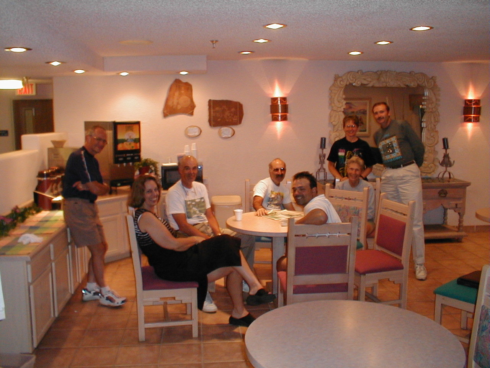

Day 14: May 26, Santa Fe, NMPrevious Day - Home - Next Day Photo of the DaySitting around the campfire (left to right): Chuck, Pam, Gene, Bill, JJ, Lynn (top), Ethel, and Phil. Keegan's LogDay 14: May 26, Santa Fe, NM Mileage: 2.72 milesWeather: Warm, Partly cloudy Today was our second rest day, and rest I did. I slept in until after 8:00, more than 2 hours of extra sleep! Dad went to downtown Santa Fe with the Brumleys and Ethel, I decided to stay behind for some extra rest. I headed to the Laundromat down the street to clean my biking clothes, I wasn't the only CrossRoads cyclist there either. I also reorganized the website, the problems with the photo album should be gone (because the album is gone), the pictures are now on separate days with both dad's and my logs for the day. If you don't have the address yet, check it out sometime at http://expert.cc.purdue.edu/~brownkl I had some lunch at the Schlotsky's across the street, then dad and I rode down to the mall (hence the 2.72 miles) when he got back from downtown. It was pretty busy on Memorial Day weekend, but we didn't see too much of interest. We went with a small group of people to a Chinese restaurant for dinner, but decided to eat at a chain restaurant when the Chinese place was closed. There were a few riders hanging around in the hotel lobby after dinner, dad and I enjoyed a few stories before heading up to bed. Tomorrow is a medium day, 73 miles with a healthy amount of climbing. We're going to try to stay a little further ahead in the pack, both of us have been dragging a bit lately. But that's what rest days are for... -Keegan Phil's LogI promised answers to questions. Some are from school classes, some from grown-ups. Here goes... 1. Did you ever wish you wouldn't have started the trip? No, not yet anyway. We've had some tough days, the Mojave Desert and climbing through Oak Creek Canyon. But we knew we were in for some tough days when we started. 2. Do you ever feel like you just want to stop and quit? A couple of times, yes. It is really discouraging to get a flat tire when you are tired and close to your goal. "Why did I have to get a flat NOW?" It happened to me yesterday, glass in my back tire. But those are just small setbacks, and all of life has setbacks. You just make repairs, get back on and pedal some more. We are riding what is called a "supported ride". There are two vans or "sag wagons" with food and drinks and tools if we need them. They are watching out for us and making us feel safe. Two days ago we met a couple from the Netherlands on bicycles, they were "unsupported", one bicycle was heavily loaded and the other was pulling a trailer. THAT seems really hard to us. 3. Is it more work than you thought it would be? Yes and no. It is surprising how long a hill can go on. You think you are near the top when you round a turn and see lots more hill ahead. Keep cranking. You don't want to think about how hard it is. You just keep going. It is a lot of work. 4. What made you want to take this trip? Well, primarily I guess it was a challenge. Part of it was that I love to visit the desert, and this would tell me more about what it was like to work hard in that environment. Probably the biggest part was that I saw two young men doing it when I was a boy, and dreamed of doing it myself. 5. Have any dogs chased you? Not yet.. If they do we can either sprint and try to outrun them, or stop and let them bark at us and yell for help. Dogs are scary. Want to know what is more scary? People that litter our roads. It is bad enough to see trash, but broken bottles, and we see many, can cause a tire blowout and crash. I'd rather have dogs than broken glass. Please don't ever litter. It is thoughtless and can be very dangerous. 6. Do you think you will make it? Absolutely. But we have to be careful. One small error accident could spoil the whole effort. If we ride safely enough, we WILL make it. 7. Have the police ever stopped you? Once, when I was fourteen, I was stopped for speeding on my bicycle in Chappaqua, New Your. It was a long downhill. But now that we are older and wiser we obey all the traffic laws. A policeman should have no reason to stop us. They do wave, and we wave back. 8. Have you had any wrecks? Unfortunately, Keegan had one three days ago. We think he entered a downhill turn too fast, and his front tire skidded. He hurt his elbow and hip and is riding with some pain. But it is getting better, and he is a strong rider. we pray that we will be safe riders and will have no more wrecks. 9. How can you sit on that little bitty bicycle seat ? Bicycles generally don't have much padding on the seats, the seats are very small and the bikes themselves do not have shock absorbing apparatus (at least not for the ones that are trying to eek out all of the energy going for high efficiency). Probably the bicycle seat is the toughest part of the ride. Most of us have been riding for years, many long distances, and we have had to find seats that work for us. I started this ride with one I thought I was happy with, a Specialized Body Geometry. But after the desert days, which were long, I was really sore. It is generally considered a bad idea to change seats in the middle of a long ride, but I HAD to do something. I bought a Serfas Deep Groove Design which is a little concave in the center. I seem to have a larger contact area, and that lessens the point stresses. This saddle also passes much more air down through the split middle, which helps keep things dry. For me, it is a vast improvement. But we all get tired of our little bitty seats, it is just a matter of how tired. We laugh a lot about that subject. 10. I take it that you are using a racing type bike with those little bitty thin tires to keep the rolling resistance down? You sure seem to be having more than a small share of flats over a short distance. Would not a mountain bike tire with a thick and hard high pressure center section be a better choice maintenance wise ? Perhaps late thought for this trip now as I suppose your outfitting plans dictated what type of cycling equipment you would be using. Please fill me in on some of the equipment choices and why chosen. Preventing flats is part attention, part compromise. The leading cause of flats is clearly the little wires that are used in recapping truck tires. These little wires, perhaps 5 thousandths in diameter, are sharp and stick through the tire and into the tube, producing a slow flat. We avoid chunks of tire but there are little free wires that get most of us anyway. Next on the list is broken glass. Depending on shape and size they can cause a slow to a dangerous fast flat. You can see some broken glass and try to avoid it, whether you see it no not seems to depend mostly on sun angle. But you can't see it all. Rocks, little sharp ones, are like glass. But rock flats are scarce. Most of the most successful riders use touring tires, a cross between racing and the beefy off-road tires, closer to the racing. The most experienced riders don't seem to get flats on any tire. We wish we were in that crowd. 11. You need to explain why underwear is not allowed - we have many speculations! I asked people over dinner for the reasons. Here are the responses: The chamois in the riding shorts absorbs moisture, underwear has seams in the wrong places and riding shorts don't, shorts stick to your butter better than bandaids, so there's no panty line, to prevent chafing, because real men don't wear underwear, and so you'll be more "one with the bicycle". I also learned that Ethel IS wearing underwear - I can't wait to tell Traci on her! Most of us have triple chainrings, one real small one referred to as "the granny gear" that helps us to climb hills by spinning faster while going less distance. Ethel, who is a granny, won't have one. Her comment, "If they didn't call it a granny ring I'd get one." Las Vegas, New Mexico tomorrow. Y'all enjoy the Indy 500. Phil |
{kind=link}